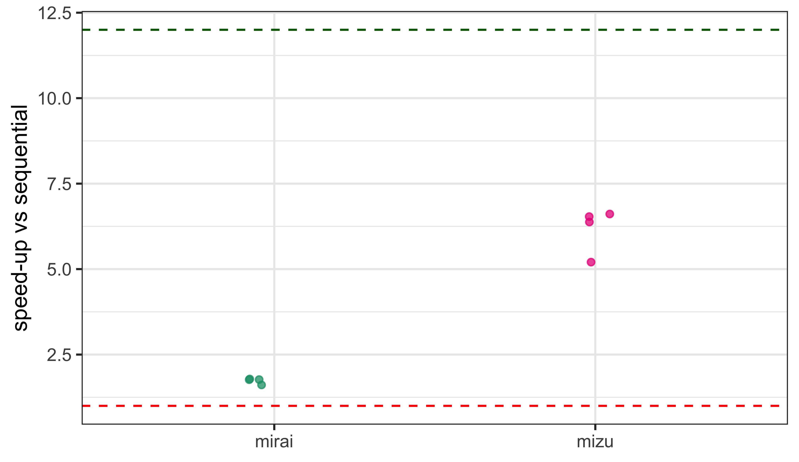
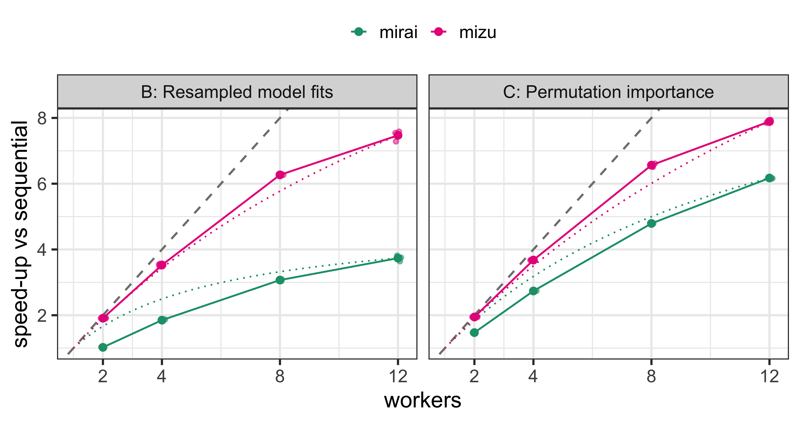
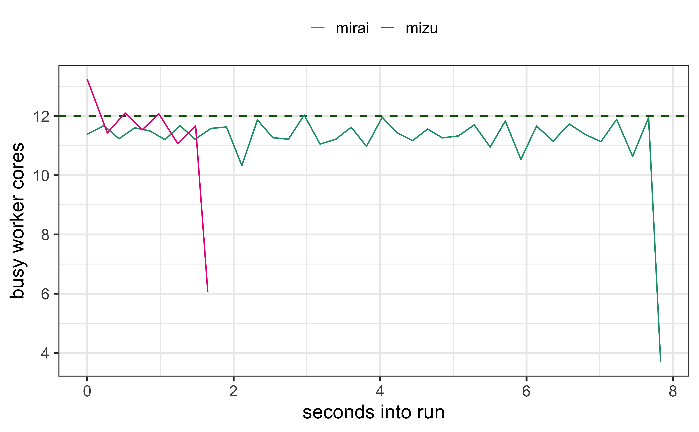
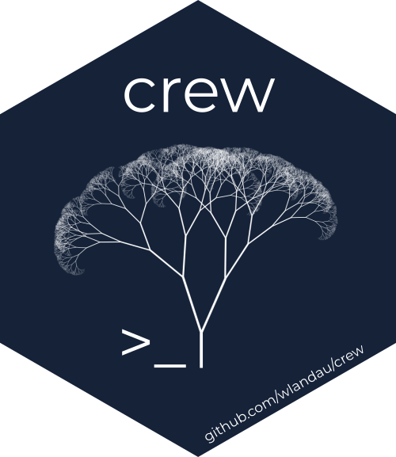
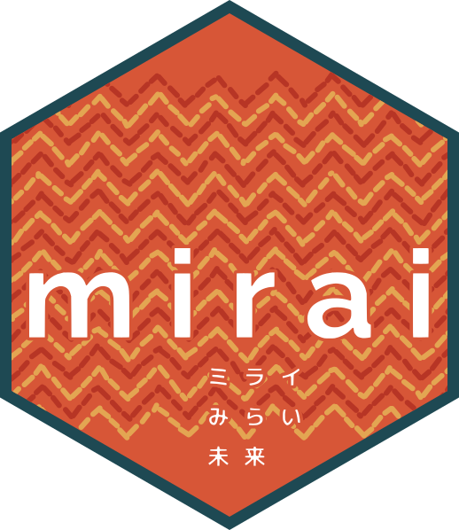
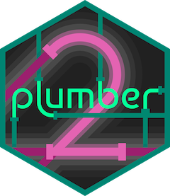
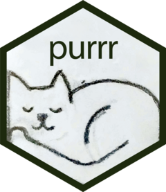
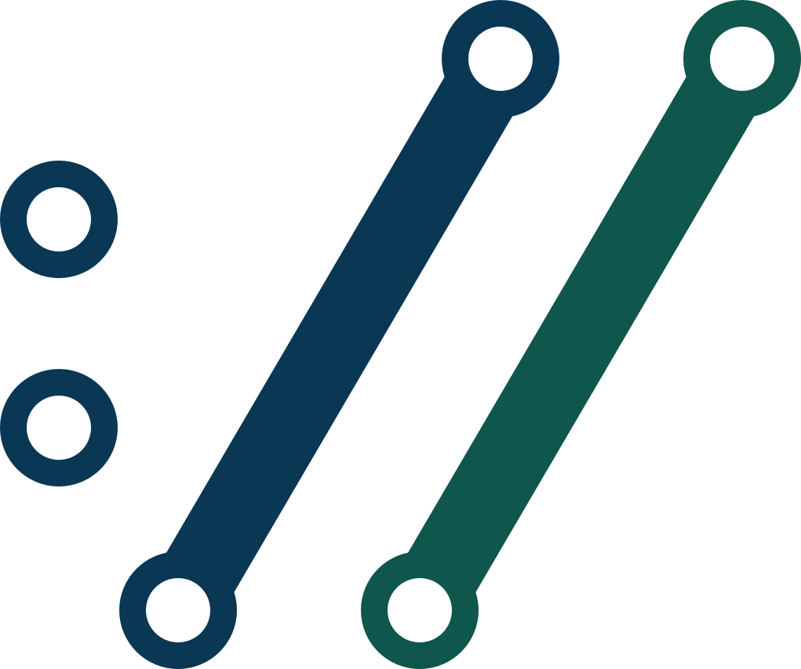

| Workload | Tasks | Per-task cost | Per-task input | Shared input | Per-task result |
|---|---|---|---|---|---|
| A: Bootstrap metrics | 5000 | ~3 ms | 1 bootstrap split (~200 KB) | — | 4-row tibble |
| B: Resampled model fits | 250 | ~45 ms | 1 bootstrap split (~1.7 MB) | — | 2-row tibble |
| C: Permutation importance | 240 | ~85 ms | 1 bootstrap replicate (~2.8 MB) | fitted glm (0.2 MB) | 30-row tibble |
| D: Bootstrap prediction intervals | 400 | ~90 ms | 1 bootstrap split (~3.4 MB) | 38 MB portfolio (250k policies) | 250k-vector (2 MB) |
Async and Parallel R
Building the Open Source Tools
Charlie Gao
Open Source, Posit PBC
Your bootstrap is embarrassingly parallel
So why did twelve workers only give you 2x?
Twelve workers, one bootstrap

Figure 1
Early results · 12 workers, 14-core M4 Pro · R 4.6.1 · sequential lapply() baseline = 1× · both runtimes’ outputs match the sequential run
The evidence: four workloads
Four workflows you already run —
chosen to stress the transport regimes that separate parallel runtimes
Four workloads
daemons() + mirai_map()
A — Overhead-bound: thousands of tiny tasks
# A: yardstick metrics on one bootstrap split
task_metrics <- function(split) {
require(rsample)
require(yardstick)
mtr <- metric_set(rmse, rsq, mae, ccc)
mtr(analysis(split), y, .pred)
}5,000 × ~3 ms — at this grain, the per-task transport rivals the compute itself
B — The everyday workflow
# B: parsnip workflow fit on the analysis set, scored out-of-bag
task_fit_glm <- function(split) {
wf <- workflow() |>
add_recipe(recipe(class ~ ., data = analysis(split)) |>
step_normalize(all_numeric_predictors())) |>
add_model(logistic_reg() |> set_engine("glm"))
fitted <- fit(wf, data = analysis(split))
pred <- bind_cols(predict(fitted, assessment(split), type = "prob"),
predict(fitted, assessment(split), type = "class"))
bind_rows(roc_auc(pred, class, .pred_yes),
accuracy(pred, class, .pred_class))
}fit_resamples() on a recipe + logistic regression — 250 × ~45 ms, ~1.7 MB riding inside each split
C — Large payloads, a shared model
# C: one bootstrap replicate of the validation set; permute each
# predictor in turn and record the AUC drop against the pre-fit model
task_permimp <- function(task, model) {
set.seed(task$seed, kind = "Mersenne-Twister") # streams comparable across backends
dat <- analysis(task$split); truth <- dat$y
base_auc <- roc_auc_vec(truth, predict(model, dat, type = "response"), event_level = "second")
for (col in setdiff(colnames(dat), "y")) {
shuffled <- dat |> mutate(!!col := sample(.data[[col]]))
importance[col] <- base_auc -
roc_auc_vec(truth, predict(model, shuffled, type = "response"), event_level = "second")
}
tibble(col = names(importance), base_auc, importance)
}240 × ~85 ms; ~2.8 MB per replicate, plus the fitted model every replicate scores with
D — Broadcast in, bulk out
# D: refit the severity model on one bootstrap split and predict
# expected loss for every policy in the shared portfolio
task_bootpred <- function(split, portfolio) {
require(rsample)
fit <- glm(loss ~ ., data = analysis(split),
family = Gamma(link = "log"), control = list(maxit = 25))
as.numeric(predict(fit, newdata = portfolio, type = "response"))
}400 × ~90 ms · a 38 MB shared portfolio · 800 MB of results on the way back
The hidden ceiling
Amdahl’s law
\[S(n) = \frac{1}{(1 - p) + \dfrac{p}{n}} \;\xrightarrow[n \to \infty]{}\; \frac{1}{1 - p}\]

Figure 2
mizu adheres to the law; mirai falls away
Same busyness, different clocks

Figure 3
Stop waiting. Stream the work. Same code everywhere
Where mirai started
targets
→

crew
miraimirai began as the engine under crew and targets
Your R session is an event loop
Async is never waiting for a result
A future you still wait for
# 1 · base R parallel — one blocking call
res <- parallel::parLapply(cl, tasks, fn)
# 2 · future — a handle, but you still wait
f <- future::future(fit(x))
v <- future::value(f)
# promises poll every 100ms
# 3 · mirai — the handle wakes the event loop
m <- mirai::mirai(fit(x), .args = list(x = x))
v <- m[]
# event-driven promisesPush, stream, steal
Why learn a new map?
The old interface runs on mirai daemons today. Two things it can’t give you:
- The overhead stays —
parLapply()is the push model: static chunks, blocking collect, §1’s costs in full - It can’t say async — no separate collect (
[]when you’re ready), no event-driven promises; the call returns when the last task does
type = "MIRAI" is native in R ≥ 4.5 — mirai::make_cluster(12) on older R
One machine
Your own servers, over SSH
HPC clusters, through their scheduler
Any REST API — cloud, Kubernetes, Workbench
The same mirai_map() call, anywhere —
one line of configuration
Already underneath
mirai is the parallel backend inside tools you may already run
Shiny

plumber2
purrrtidymodels
targets
mlr3
mirai
In curl too
The event-driven async built for Shiny is in curl too

curlmulti_fdset()httr2req_perform_promise()
Share once
The copy
The constants every task reads:
- A–D — the dataset every replicate resamples from
- C — the fitted model every permutation scores with
- D — the 38 MB portfolio every refit predicts over
Twelve workers → twelve copies
library(mori)
Photo by Zoshua Colah on Unsplash
One copy, many readers
What every task carries
share() once — 200 MB becomes 200 B
You just stop hitting the limit
Same headroom — room for many more tasks
share()
library(mori)
portfolio <- share(portfolio) # one shared region; 200 B reference
mirai_map(splits, task_bootpred, .args = list(portfolio = portfolio))[]A shared object is an ordinary R object — downstream code is unchanged
The task itself in shared memory
Workers claim off the shared pages
Results as views
The main process is out of the data path
mizu_pool() + mizu_map()
library(mizu)
p <- mizu_pool(12)
res <- mizu_map(p, splits, function(split) {
fit <- fit_glm(analysis(split))
mizu_map(mizu_current_pool(), predictors, function(v) {
auc_drop(fit, split, v) # inner map: same pool, same shared pages
})
})The nested map: the inner map runs on the same pool — no second process layer, no new copies; maps compose
The rules you learned were the transport’s
| Socket transports taught you | Under mizu |
|---|---|
| Keep tasks coarse | Partition at the problem’s natural granularity — staging is per call, not per task |
| Keep results small | Results published in place — collected as zero-copy views |
| Twelve workers, twelve copies of every constant | One shared region — workers read the same pages |
A generation of performance instincts answers a cost that no longer exists
Where mizu ends, mirai begins
Never block. Never copy.
install.packages(c("mirai", "mori"))
watch · pak::pak("shikokuchuo/mizu") · pre-release
Photo by Todd Quackenbush on Unsplash
Appendix
The mechanical path
From the code you have to mirai — today, on CRAN:
| You have | The mirai path |
|---|---|
parallel::mclapply(xs, fn) |
daemons(12) once, then mirai_map(xs, fn)[] |
parallel::parLapply(cl, xs, fn) |
makeCluster(12, type = "MIRAI") — keep parLapply() unchanged |
tidymodels fit_resamples() · tuning |
daemons(12) once — tune’s parallel backend is mirai |
purrr::map(xs, fn) |
purrr::map(xs, in_parallel(fn)) with daemons set |
targets pipelines |
crew::crew_controller_local(workers = 12) |
Plus mori::share(x) once for any large read-only constant
Under the map: round-trip costs
Communication overhead, mizu vs mirai, one machine (M4 Pro):
| Benchmark | mizu | mirai | Speed-up |
|---|---|---|---|
| Trivial task round trip | 0.8 µs | 100.5 µs | 126× |
| Pipelined throughput, 1 worker | 833,000 tasks/s | 9,700 tasks/s | 86× |
| 8 MB vector round trip | 400 µs | 18.4 ms | 46× |
| Parallel map of 2,000 ~10 µs tasks, 4 workers | 5.0 ms | 218 ms | 44× |
Microbenchmarks measure the mechanism; workloads A–D measure your work (mirai also reaches remote workers and HPC)
Statistical Society of Australia · 22 October 2026